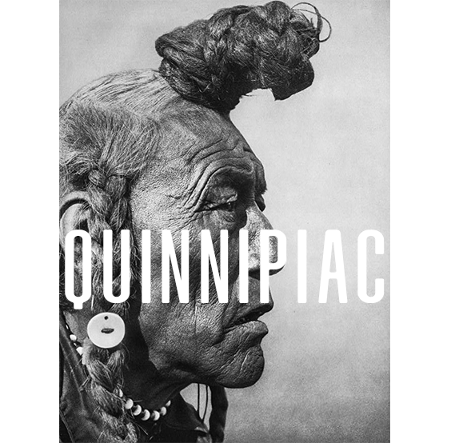
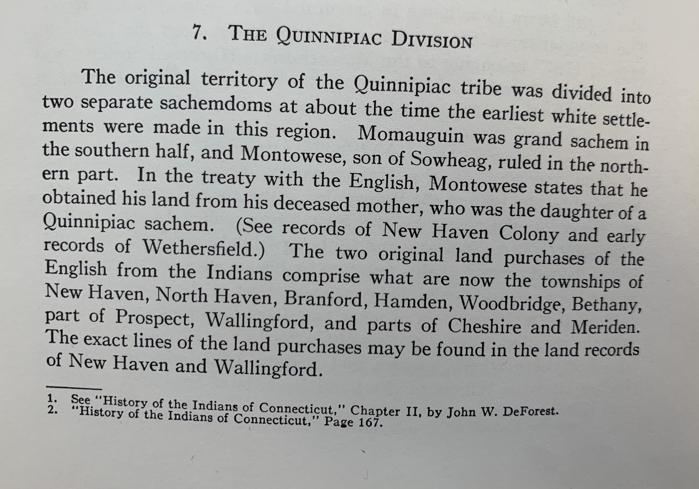
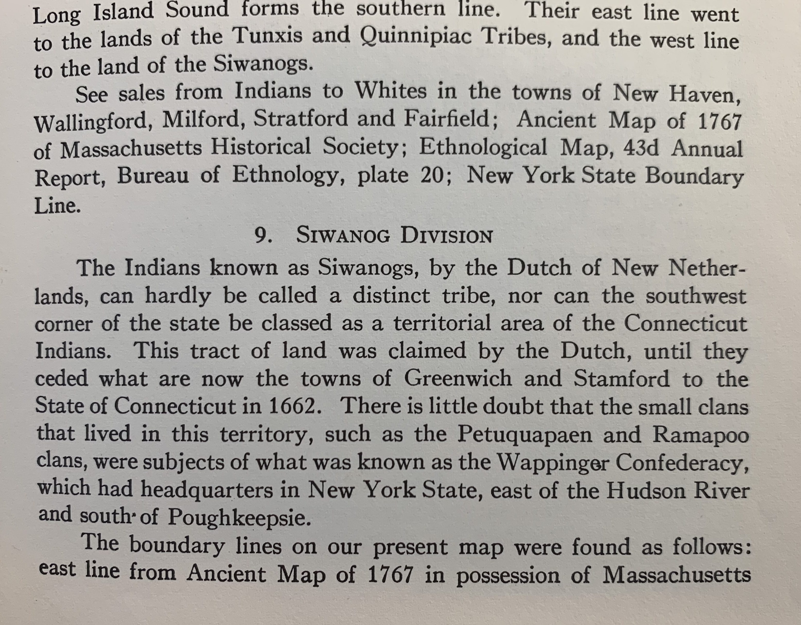

The Quinnipiac (occasionally spelled Quinnipiack) people—also known as Quiripi and Renapi—are speakers of the r-dialect
of the Algonquian language family. (The Algonquian Language Phyla was the largest in North America and covered about
one-third of the continent above Mexico.) The Quinnipiac/Quiripi/Renapi people are considered to be the first of
the indigenous peoples to be placed on a reservation (by the English in 1638), under the first of several treaties
which resulted in additional reservations at Branford, Madison, Derby, and Farmington. J.H. Trumbull was the first to
recognize that the New Haven band of the Quiripi was only one band or sub-sachemship and not the entire tribal nation.[4]
Linguist Blair Rudes found that the Eastern Algonquian r-dialect group's "territory extended "… up to the Hudson in the
west, including a portion of land in present-day New York state…. Furthermore… the same people occupied a portion of
Western Long Island …." Since 1997, more extensive research, based on linguistics and early historical records,
has extended the boundaries of the 1500-1600 AD Quiripi/Renapi/Quinnipiac confederacies to include all of what is
now Connecticut, eastern New York, northern New Jersey, and half of Long Island (prior to the immigration of the
Pequot/Mohegan peoples into eastern CT).

